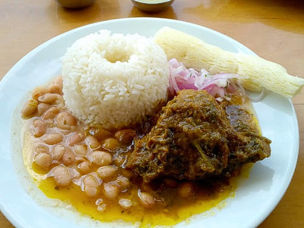

Tallarines verdes
S/. 22.00Pasta en salsa cremosa de albahaca y espinaca con queso fresco y nueces. Un favorito de la casa.
Descubre los mejores platillos preparados con ingredientes frescos
Pasta en salsa cremosa de albahaca y espinaca con queso fresco y nueces. Un favorito de la casa.

Dados de res salteados al wok con cebolla, tomate y ají amarillo. Acompañado de papas fritas y arroz.

Estofado de cordero en salsa de culantro y chicha de jora. Servido con arroz, frejoles y yucas.